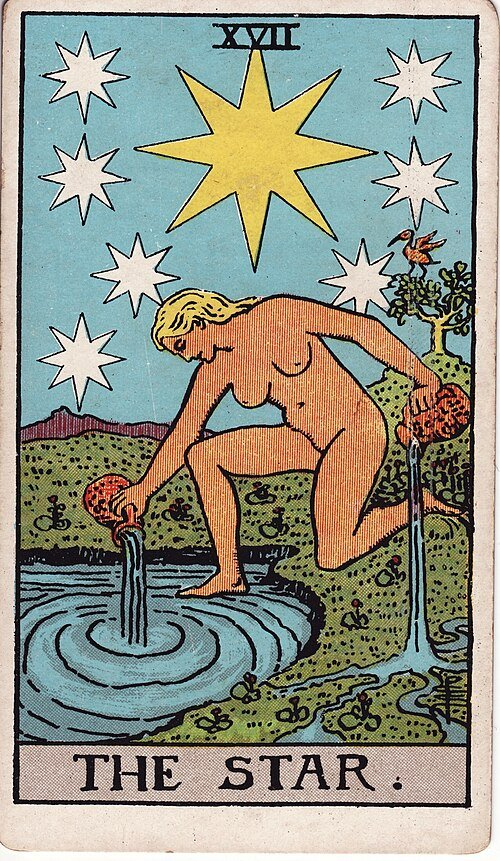
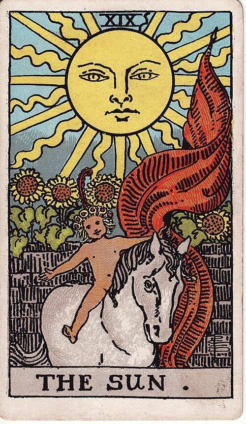
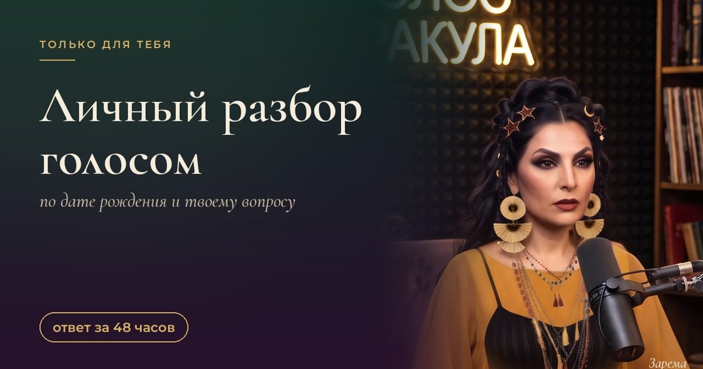
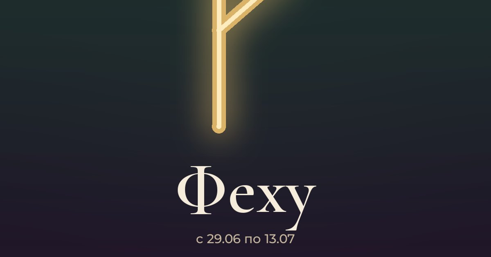
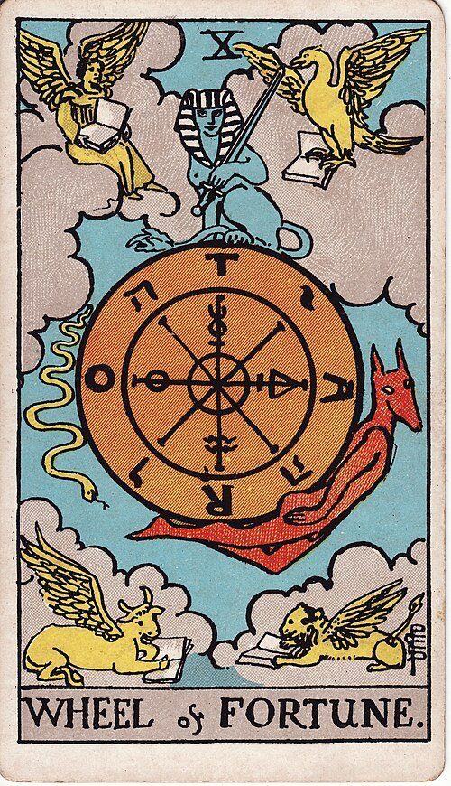
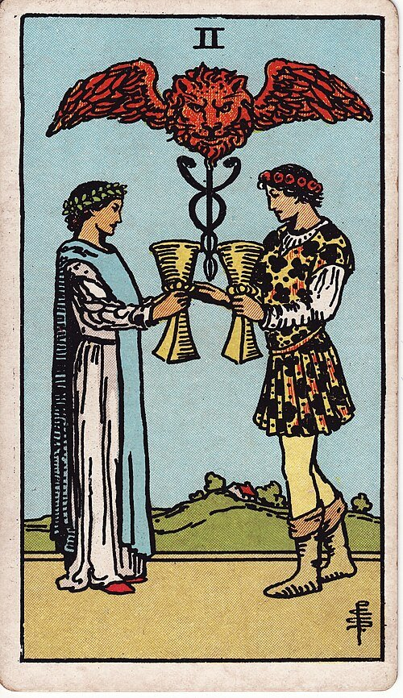
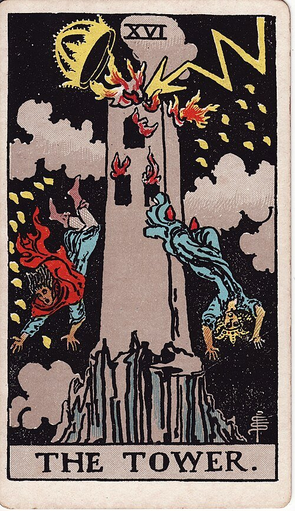

Читаю карты как разговор с собой, а не как приговор
Девочки, здесь мои статьи, бесплатные гадания онлайн и всё, что можно сделать со мной лично. Без страшилок и без обещаний «вернётся через 3 дня».
Гадания онлайн, бесплатно

Гадание «да или нет» онлайн на картах таро
Бесплатное гадание «да или нет» онлайн на одной карте таро. Задай вопрос, вытяни карту из 78 и прочитай ответ с толкованием от таролога Заремы.
Вытянуть карту →
Карта дня таро онлайн
Бесплатная карта дня таро онлайн. Выбери тему (любовь, деньги или путь), вытяни карту и получи совет на сегодня от таролога Заремы.
Вытянуть карту →Работа со мной
Когда одной карты мало. Оплата и результат в моём Telegram-боте.

Расклад на один вопрос
Три карты на твой вопрос: что сейчас, что мешает, что делать. Ответ в Telegram.
290 ₽Подробнее →
Разбор «Мой мужчина»
Где встреча, какой он, что мешает и три шага на месяц. PDF и голосовое.
990 ₽Подробнее →
«Архетипы силы»
4 аудионастройки по 10–15 минут и дневник на 7 дней. Начни со своего аркана.
990 ₽Подробнее →
Личный разбор голосом Заремы
Самый глубокий формат: анкета, PDF с шагами на 30 дней и моё голосовое.
2 990 ₽Подробнее →
Круг Заремы
Закрытый канал: прогноз недели по стихиям, аудиопрактики, ответы голосом.
390 ₽ / месПодробнее →
Рунная формула под твой запрос
Три руны под одну цель: деньги, защита, любовь, долги, новое начало. С обоями.
390 ₽Подробнее →
Обои-талисманы на телефон
8 обоев на экран: любовь, деньги, отношения, защита. Одна в подарок.
290 ₽Подробнее →Статьи

Знаки зодиакаСамый тяжёлый знак зодиака: мой честный топ-3 (Скорпион, выдыхай)
Ироничный разбор самых непростых знаков зодиака: почему с ними тяжело, что за этим прячется и как с ними ладить. Карта таро для каждого знака.
РитуалыСоль у порога: тихий ритуал на вечер, который делают без свидетелей
Простой вечерний ритуал с солью у порога: зачем его делают, как провести за 10 минут, какие ошибки сбивают настрой и что сказать себе в конце.
РаскладыРасклад «да или нет» за 10 секунд: как спросить карты самой
Как сделать расклад таро «да или нет» самостоятельно: как правильно задать вопрос, способ с одной картой, список карт-«да» и карт-«нет» и честные ограничения метода.

Любовь«Что он думает обо мне?» Четыре карты, которые отвечают честно
Расклад «что он думает»: почему карты не читают чужие мысли, но показывают динамику пары. Значения Двойки Кубков, Пажа Кубков, Восьмёрки Кубков и Короля Мечей.

Значения картСмерть, Башня, Дьявол: что на самом деле значат три самые страшные карты таро
Почему карта Смерть не значит смерть, Башня не катастрофа, а Дьявол не про зло. Честный разбор трёх «страшных» арканов и вопросы, которые стоит задать себе.